MGMT 47400: Predictive Analytics
Deep Learning
Professor: Davi Moreira
Overview
- XXXX
- XXX
XXX
Deep Learning
Neural networks became popular in the 1980s.
Lots of successes, hype, and great conferences: NeurIPS, Snowbird.Then along came SVMs, Random Forests, and Boosting in the 1990s, and Neural Networks took a back seat.
Re-emerged around 2010 as Deep Learning.
By 2020s, very dominant and successful.Part of success due to vast improvements in computing power, larger training sets, and software: TensorFlow and PyTorch.
Much of the credit goes to three pioneers and their students:
- Yann LeCun, Geoffrey Hinton, and Yoshua Bengio,
who received the 2019 ACM Turing Award for their work in Neural Networks.
- Yann LeCun, Geoffrey Hinton, and Yoshua Bengio,

Single Layer Neural Network
\[ f(X) = \beta_0 + \sum_{k=1}^{K} \beta_k h_k(X) \\ = \beta_0 + \sum_{k=1}^{K} \beta_k g(w_{k0} + \sum_{j=1}^{p} w_{kj} X_j). \]
Diagram of Single Layer Neural Network
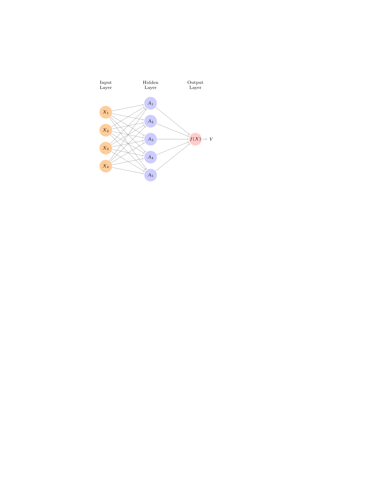Details

\(A_k = h_k(X) = g(w_{k0} + \sum_{j=1}^{p} w_{kj} X_j)\) are called the activations in the hidden layer.
\(g(z)\) is called the activation function. Popular examples are the sigmoid and rectified linear (ReLU), shown in the figure.
Activation functions in hidden layers are typically nonlinear; otherwise, the model collapses to a linear model.
So the activations are like derived features — nonlinear transformations of linear combinations of the features.
The model is fit by minimizing \(\sum_{i=1}^{n} (y_i - f(x_i))^2\) (e.g., for regression).
Example: MNIST Digits
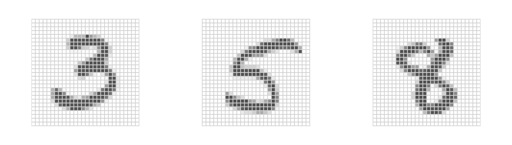
Handwritten digits
\(28 \times 28\) grayscale images
60K train, 10K test images
Features are the 784 pixel grayscale values \(\in (0, 255)\)
Labels are the digit class \(0\text{–}9\)
Goal: Build a classifier to predict the image class.
We build a two-layer network with:
256 units at the first layer,
128 units at the second layer, and
10 units at the output layer.
Along with intercepts (called biases), there are 235,146 parameters (referred to as weights).
Details of Output Layer
Let \(Z_m = \beta_{m0} + \sum_{\ell=1}^{K_2} \beta_{m\ell} A_\ell^{(2)}\), \(m = 0, 1, \ldots, 9\), be 10 linear combinations of activations at the second layer.
Output activation function encodes the softmax function:
\[ f_m(X) = \Pr(Y = m \mid X) = \frac{e^{Z_m}}{\sum_{\ell=0}^{9} e^{Z_\ell}}. \]
- We fit the model by minimizing the negative multinomial log-likelihood (or cross-entropy):
\[ -\sum_{i=1}^{n} \sum_{m=0}^{9} y_{im} \log(f_m(x_i)). \]
- \(y_{im}\) is 1 if the true class for observation \(i\) is \(m\), else 0 — i.e., one-hot encoded.
Results
| Method | Test Error |
|---|---|
| Neural Network + Ridge Regularization | 2.3% |
| Neural Network + Dropout Regularization | 1.8% |
| Multinomial Logistic Regression | 7.2% |
| Linear Discriminant Analysis | 12.7% |
Early success for neural networks in the 1990s.
With so many parameters, regularization is essential.
Some details of regularization and fitting will come later.
Very overworked problem — best reported rates are \(< 0.5\%\)!
Human error rate is reported to be around \(0.2\%\), or 20 of the 10K test images.
Convolutional Neural Network — CNN
Major success story for classifying images.
Shown are samples from CIFAR100 database: \(32 \times 32\) color natural images, with 100 classes.
\(50K\) training images, \(10K\) test images.
Each image is a three-dimensional array or feature map:
\(32 \times 32 \times 3\) array of 8-bit numbers.
The last dimension represents the three color channels for red, green, and blue.
How CNNs Work
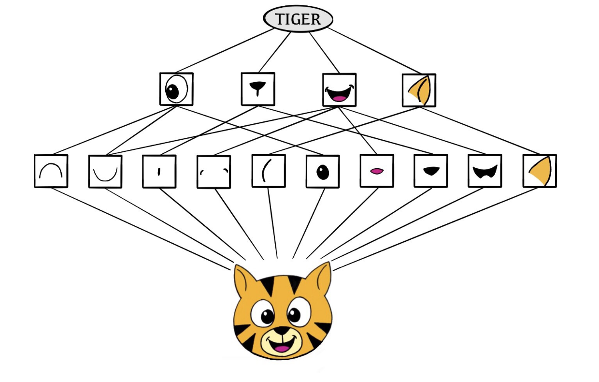The CNN builds up an image in a hierarchical fashion.
Edges and shapes are recognized and pieced together to form more complex shapes, eventually assembling the target image.
This hierarchical construction is achieved using convolution and pooling layers.
Convolution Filter
\[ \text{Input Image} = \begin{bmatrix} a & b & c \\ d & e & f \\ g & h & i \\ j & k & l \end{bmatrix} \quad \text{Convolution Filter} = \begin{bmatrix} \alpha & \beta \\ \gamma & \delta \end{bmatrix}. \]
\[ \text{Convolved Image} = \begin{bmatrix} a\alpha + b\beta + d\gamma + e\delta & b\alpha + c\beta + e\gamma + f\delta \\ d\alpha + e\beta + g\gamma + h\delta & e\alpha + f\beta + h\gamma + i\delta \\ g\alpha + h\beta + j\gamma + k\delta & h\alpha + i\beta + k\gamma + l\delta \end{bmatrix}. \]
The filter is itself an image and represents a small shape, edge, etc.
We slide it around the input image, scoring for matches.
The scoring is done via dot-products, illustrated above.
If the subimage of the input image is similar to the filter, the score is high; otherwise, it is low.
The filters are learned during training.
Convolution Example

The idea of convolution with a filter is to find common patterns that occur in different parts of the image.
The two filters shown here highlight vertical and horizontal stripes.
The result of the convolution is a new feature map.
Since images have three color channels, the filter does as well: one filter per channel, and dot-products are summed.
The weights in the filters are learned by the network.
Pooling
\[ \text{Max pool} \begin{bmatrix} 1 & 2 & 5 & 3 \\ 3 & 0 & 1 & 2 \\ 2 & 1 & 3 & 4 \\ 1 & 1 & 2 & 0 \end{bmatrix} \rightarrow \begin{bmatrix} 3 & 5 \\ 2 & 4 \end{bmatrix} \]
Each non-overlapping \(2 \times 2\) block is replaced by its maximum.
This sharpens the feature identification.
Allows for locational invariance.
Reduces the dimension by a factor of 4 — i.e., factor of 2 in each dimension.
Architecture of a CNN
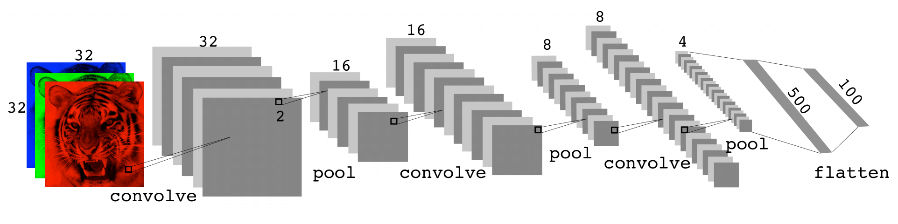Many convolve + pool layers.
Filters are typically small, e.g., each channel \(3 \times 3\).
Each filter creates a new channel in the convolution layer.
As pooling reduces size, the number of filters/channels is typically increased.
Number of layers can be very large.
E.g., resnet50 trained on imagenet 1000-class image database has 50 layers!
Using Pretrained Networks to Classify Images
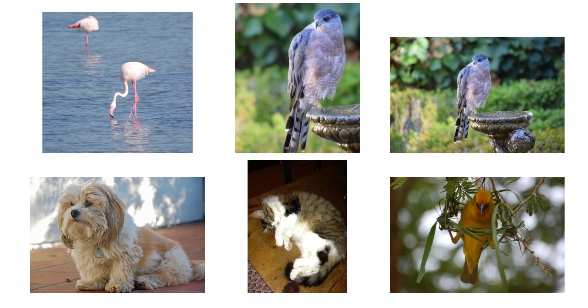Here we use the 50-layer resnet50 network trained on the 1000-class imagenet corpus to classify some photographs.
Document Classification: IMDB Movie Reviews
The IMDB corpus consists of user-supplied movie ratings for a large collection of movies. Each has been labeled for sentiment as positive or negative. Here is the beginning of a negative review:
This has to be one of the worst films of the 1990s. When my friends & I were watching this film (being the target audience it was aimed at) we just sat & watched the first half an hour with our jaws touching the floor at how bad it really was. The rest of the time, everyone else in the theater just started talking to each other, leaving or generally crying into their popcorn …
We have labeled training and test sets, each consisting of 25,000 reviews, and each balanced with regard to sentiment.
We wish to build a classifier to predict the sentiment of a review.
Featurization: Bag-of-Words
Documents have different lengths and consist of sequences of words. How do we create features \(X\) to characterize a document?
From a dictionary, identify the 10K most frequently occurring words.
Create a binary vector of length \(p = 10K\) for each document, and score a 1 in every position that the corresponding word occurred.
With \(n\) documents, we now have an \(n \times p\) sparse feature matrix \(\mathbf{X}\).
We compare a lasso logistic regression model to a two-hidden-layer neural network on the next slide. (No convolutions here!)
Bag-of-words are unigrams. We can instead use bigrams (occurrences of adjacent word pairs) and, in general, m-grams.
Lasso versus Neural Network — IMDB Reviews

Simpler lasso logistic regression model works as well as neural network in this case.
glmnet was used to fit the lasso model, and is very effective because it can exploit sparsity in the \(\mathbf{X}\) matrix.
Recurrent Neural Networks
Often data arise as sequences:
Documents are sequences of words, and their relative positions have meaning.
Time-series such as weather data or financial indices.
Recorded speech or music.
Handwriting, such as doctor’s notes.
RNNs build models that take into account this sequential nature of the data and build a memory of the past.
The feature for each observation is a sequence of vectors \(X = \{X_1, X_2, \ldots, X_L\}\).
The target \(Y\) is often of the usual kind — e.g., a single variable such as Sentiment, or a one-hot vector for multiclass.
However, \(Y\) can also be a sequence, such as the same document in a different language.
Simple Recurrent Neural Network Architecture

The hidden layer is a sequence of vectors \(A_\ell\), receiving as input \(X_\ell\) as well as \(A_{\ell-1}\). \(A_\ell\) produces an output \(O_\ell\).
The same weights \(\mathbf{W}\), \(\mathbf{U}\), and \(\mathbf{B}\) are used at each step in the sequence — hence the term recurrent.
The \(A_\ell\) sequence represents an evolving model for the response that is updated as each element \(X_\ell\) is processed.
RNN in Detail
Suppose \(X_\ell = (X_{\ell1}, X_{\ell2}, \ldots, X_{\ell p})\) has \(p\) components, and \(A_\ell = (A_{\ell1}, A_{\ell2}, \ldots, A_{\ell K})\) has \(K\) components. Then the computation at the \(k\)-th components of hidden unit \(A_\ell\) is:
\[ A_{\ell k} = g\left(w_{k0} + \sum_{j=1}^{p} w_{kj} X_{\ell j} + \sum_{s=1}^{K} u_{ks} A_{\ell-1,s}\right) \]
\[ O_\ell = \beta_0 + \sum_{k=1}^{K} \beta_k A_{\ell k} \]
Often we are concerned only with the prediction \(O_L\) at the last unit. For squared error loss, and \(n\) sequence/response pairs, we would minimize:
\[ \sum_{i=1}^{n} (y_i - o_{iL})^2 = \sum_{i=1}^{n} \left(y_i - \left(\beta_0 + \sum_{k=1}^{K} \beta_k g\left(w_{k0} + \sum_{j=1}^{p} w_{kj} x_{iL,j} + \sum_{s=1}^{K} u_{ks} a_{i,L-1,s}\right)\right)\right)^2 \]
RNN and IMDB Reviews
The document feature is a sequence of words \(\{\mathcal{W}_\ell\}_{1}^{L}\). We typically truncate/pad the documents to the same number \(L\) of words (we use \(L = 500\)).
Each word \(\mathcal{W}_\ell\) is represented as a one-hot encoded binary vector \(X_\ell\) (dummy variable) of length \(10K\), with all zeros and a single one in the position for that word in the dictionary.
This results in an extremely sparse feature representation and would not work well.
Instead, we use a lower-dimensional pretrained word embedding matrix \(\mathbf{E}\) (\(m \times 10K\), next slide).
This reduces the binary feature vector of length \(10K\) to a real feature vector of dimension \(m \ll 10K\) (e.g., \(m\) in the low hundreds).
Word Embedding
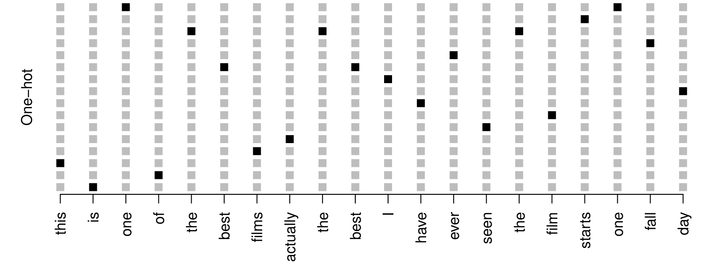

Embeddings are pretrained on very large corpora of documents, using methods similar to principal components. word2vec and GloVe are popular.
RNN on IMDB Reviews
After a lot of work, the results are a disappointing 76% accuracy.
We then fit a more exotic RNN than the one displayed — a LSTM with long and short term memory. Here \(A_\ell\) receives input from \(A_{\ell-1}\) (short term memory) as well as from a version that reaches further back in time (long term memory). Now we get 87% accuracy, slightly less than the 88% achieved by glmnet.
These data have been used as a benchmark for new RNN architectures. The best reported result found at the time of writing (2020) was around 95%. We point to a leaderboard in Section 10.5.1.
Time Series Forecasting
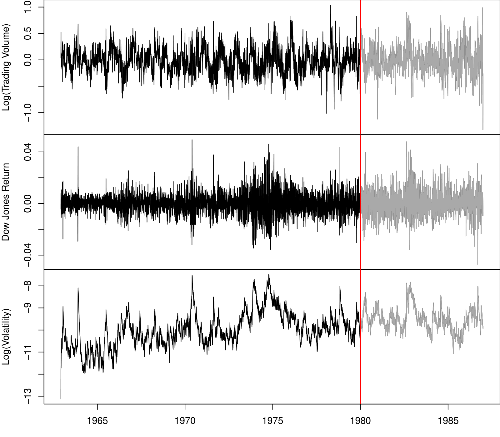New-York Stock Exchange Data
Shown in the previous slide are three daily time series for the period December 3, 1962, to December 31, 1986 (6,051 trading days):
Log trading volume. This is the fraction of all outstanding shares that are traded on that day, relative to a 100-day moving average of past turnover, on the log scale.
Dow Jones return. This is the difference between the log of the Dow Jones Industrial Index on consecutive trading days.
Log volatility. This is based on the absolute values of daily price movements.
Goal: predict Log trading volume tomorrow, given its observed values up to today, as well as those of Dow Jones return and Log volatility.
These data were assembled by LeBaron and Weigend (1998) IEEE Transactions on Neural Networks, 9(1): 213–220.
Autocorrelation
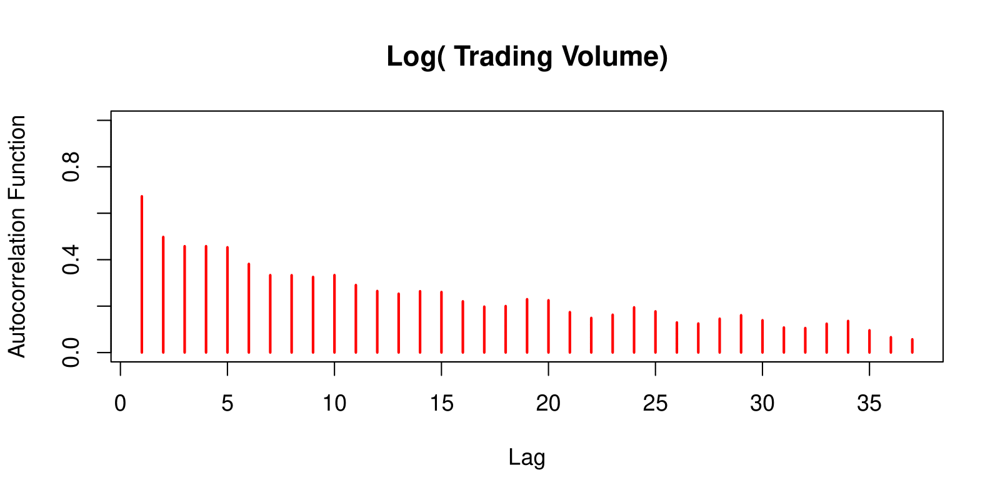The autocorrelation at lag \(\ell\) is the correlation of all pairs \((v_t, v_{t-\ell})\) that are \(\ell\) trading days apart.
These sizable correlations give us confidence that past values will be helpful in predicting the future.
This is a curious prediction problem: the response \(v_t\) is also a feature \(v_{t-\ell}\)!
RNN Forecaster
We only have one series of data! How do we set up for an RNN?
We extract many short mini-series of input sequences
\(\mathbf{X} = \{ X_1, X_2, \ldots, X_L \}\) with a predefined length \(L\) known as the lag:
\[ X_1 = \begin{pmatrix} v_{t-L} \\ r_{t-L} \\ z_{t-L} \end{pmatrix}, \quad X_2 = \begin{pmatrix} v_{t-L+1} \\ r_{t-L+1} \\ z_{t-L+1} \end{pmatrix}, \quad \cdots, \quad X_L = \begin{pmatrix} v_{t-1} \\ r_{t-1} \\ z_{t-1} \end{pmatrix}, \quad \text{and} \quad Y = v_t. \]
Since \(T = 6,051\), with \(L = 5\), we can create 6,046 such \((X, Y)\) pairs.
We use the first 4,281 as training data, and the following 1,770 as test data. We fit an RNN with 12 hidden units per lag step (i.e., per \(A_\ell\)).
RNN Results for NYSE Data

Figure shows predictions and truth for the test period.
\[ R^2 = 0.42 \text{ for RNN} \] \[ R^2 = 0.18 \text{ for straw man — use yesterday’s value of Log trading volume to predict that of today.} \]
Autoregression Forecaster
The RNN forecaster is similar in structure to a traditional autoregression procedure.
\[ \mathbf{y} = \begin{bmatrix} v_{L+1} \\ v_{L+2} \\ v_{L+3} \\ \vdots \\ v_T \end{bmatrix}, \quad \mathbf{M} = \begin{bmatrix} 1 & v_L & v_{L-1} & \cdots & v_1 \\ 1 & v_{L+1} & v_L & \cdots & v_2 \\ 1 & v_{L+2} & v_{L+1} & \cdots & v_3 \\ \vdots & \vdots & \vdots & \ddots & \vdots \\ 1 & v_{T-1} & v_{T-2} & \cdots & v_{T-L} \end{bmatrix}. \]
Fit an OLS regression of \(\mathbf{y}\) on \(\mathbf{M}\), giving:
\[ \hat{v}_t = \hat{\beta}_0 + \hat{\beta}_1 v_{t-1} + \hat{\beta}_2 v_{t-2} + \cdots + \hat{\beta}_L v_{t-L}. \]
Known as an order-\(L\) autoregression model or \(AR(L)\).
For the NYSE data, we can include lagged versions of DJ_return and log_volatility in matrix \(\mathbf{M}\), resulting in \(3L + 1\) columns.
Autoregression Results for NYSE Data
\[ R^2 = 0.41 \text{ for } AR(5) \text{ model (16 parameters)} \]
\[ R^2 = 0.42 \text{ for RNN model (205 parameters)} \]
\[ R^2 = 0.42 \text{ for } AR(5) \text{ model fit by neural network.} \]
\[ R^2 = 0.46 \text{ for all models if we include } \textbf{day\_of\_week} \text{ of day being predicted.} \]
Summary of RNNs
We have presented the simplest of RNNs. Many more complex variations exist.
One variation treats the sequence as a one-dimensional image, and uses CNNs for fitting. For example, a sequence of words using an embedding representation can be viewed as an image, and the CNN convolves by sliding a convolutional filter along the sequence.
Can have additional hidden layers, where each hidden layer is a sequence, and treats the previous hidden layer as an input sequence.
Can have output also be a sequence, and input and output share the hidden units. So called seq2seq learning are used for language translation.
When to Use Deep Learning
CNNs have had enormous successes in image classification and modeling, and are starting to be used in medical diagnosis. Examples include digital mammography, ophthalmology, MRI scans, and digital X-rays.
RNNs have had big wins in speech modeling, language translation, and forecasting.
Should we always use deep learning models?
Often the big successes occur when the signal to noise ratio is high — e.g., image recognition and language translation. Datasets are large, and overfitting is not a big problem.
For noisier data, simpler models can often work better:
On the NYSE data, the AR(5) model is much simpler than an RNN, and performed as well.
On the IMDB review data, the linear model fit by glmnet did as well as the neural network, and better than the RNN.
We endorse the Occam’s razor principle — we prefer simpler models if they work as well. More interpretable!
Fitting Neural Networks
\[ \min_{\{w_k\}_{1}^K, \beta} \frac{1}{2} \sum_{i=1}^n \left(y_i - f(x_i)\right)^2, \quad \text{where} \]
\[ f(x_i) = \beta_0 + \sum_{k=1}^K \beta_k g\left(w_{k0} + \sum_{j=1}^p w_{kj} x_{ij}\right). \]
This problem is difficult because the objective is non-convex.
Despite this, effective algorithms have evolved that can optimize complex neural network problems efficiently.
Non Convex Functions and Gradient Descent
Let \(R(\theta) = \frac{1}{2} \sum_{i=1}^n (y_i - f_\theta(x_i))^2\) with \(\theta = (\{w_k\}_{1}^K, \beta)\).
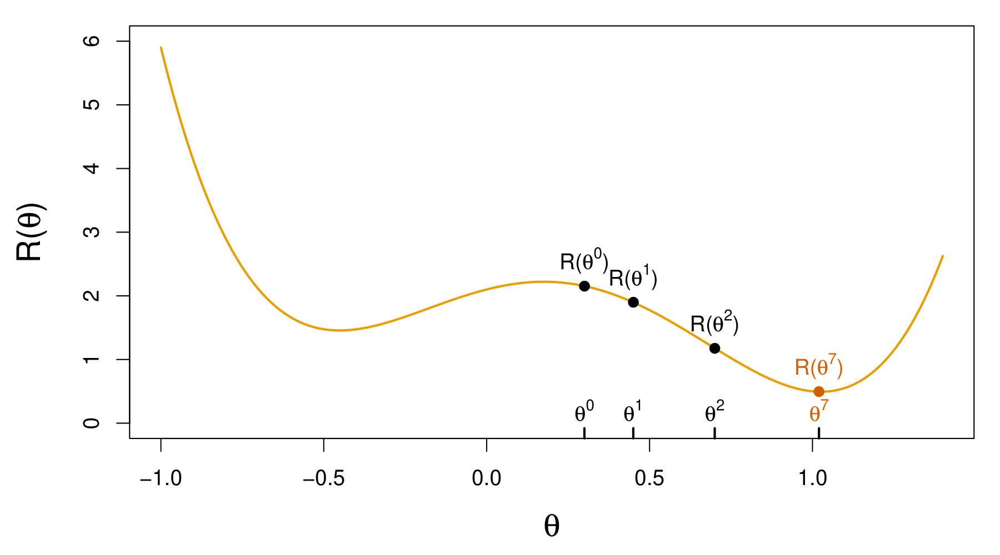Start with a guess \(\theta^0\) for all the parameters in \(\theta\), and set \(t = 0\).
Iterate until the objective \(R(\theta)\) fails to decrease:
Find a vector \(\delta\) that reflects a small change in \(\theta\), such that \(\theta^{t+1} = \theta^t + \delta\) reduces the objective; i.e., \(R(\theta^{t+1}) < R(\theta^t)\).
Set \(t \gets t + 1\).
Gradient Descent Continued
In this simple example, we reached the global minimum.
If we had started a little to the left of \(\theta^0\), we would have gone in the other direction and ended up in a local minimum.
Although \(\theta\) is multi-dimensional, we have depicted the process as one-dimensional. It is much harder to identify whether one is in a local minimum in high dimensions.
How to find a direction \(\delta\) that points downhill? We compute the gradient vector:
\[ \nabla R(\theta^t) = \frac{\partial R(\theta)}{\partial \theta} \bigg|_{\theta = \theta^t} \]
i.e., the vector of partial derivatives at the current guess \(\theta^t\).
The gradient points uphill, so our update is \(\delta = - \rho \nabla R(\theta^t)\) or
\[ \theta^{t+1} \gets \theta^t - \rho \nabla R(\theta^t), \]
where \(\rho\) is the learning rate (typically small, e.g., \(\rho = 0.001\)).
Gradients and Backpropagation
\[ R(\theta) = \sum_{i=1}^n R_i(\theta) \text{ is a sum, so gradient is sum of gradients.} \]
\[ R_i(\theta) = \frac{1}{2}(y_i - f_\theta(x_i))^2 = \frac{1}{2} \left( y_i - \beta_0 - \sum_{k=1}^K \beta_k g\left( w_{k0} + \sum_{j=1}^p w_{kj} x_{ij} \right) \right)^2 \]
For ease of notation, let
\[ z_{ik} = w_{k0} + \sum_{j=1}^p w_{kj} x_{ij}. \]
Backpropagation uses the chain rule for differentiation:
\[ \frac{\partial R_i(\theta)}{\partial \beta_k} = \frac{\partial R_i(\theta)}{\partial f_\theta(x_i)} \cdot \frac{\partial f_\theta(x_i)}{\partial \beta_k} = -(y_i - f_\theta(x_i)) \cdot g(z_{ik}). \]
\[ \frac{\partial R_i(\theta)}{\partial w_{kj}} = \frac{\partial R_i(\theta)}{\partial f_\theta(x_i)} \cdot \frac{\partial f_\theta(x_i)}{\partial g(z_{ik})} \cdot \frac{\partial g(z_{ik})}{\partial z_{ik}} \cdot \frac{\partial z_{ik}}{\partial w_{kj}} = -(y_i - f_\theta(x_i)) \cdot \beta_k \cdot g'(z_{ik}) \cdot x_{ij}. \]
Tricks of the Trade
- Slow learning. Gradient descent is slow, and a small learning rate \(\rho\) slows it even further. With early stopping, this is a form of regularization.
- Stochastic gradient descent. Rather than compute the gradient using all the data, use a small minibatch drawn at random at each step. E.g. for MNIST data, with \(n = 60K\), we use minibatches of 128 observations.
- An epoch is a count of iterations and amounts to the number of minibatch updates such that \(n\) samples in total have been processed; i.e. \(60K/128 \approx 469\) for MNIST.
- Regularization. Ridge and lasso regularization can be used to shrink the weights at each layer. Two other popular forms of regularization are dropout and augmentation, discussed next.
Dropout Learning
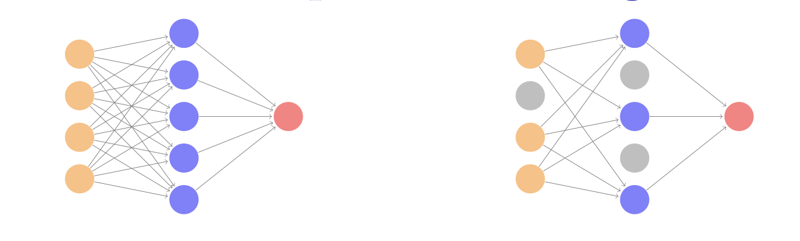At each SGD update, randomly remove units with probability \(\phi\), and scale up the weights of those retained by \(1/(1-\phi)\) to compensate.
In simple scenarios like linear regression, a version of this process can be shown to be equivalent to ridge regularization.
As in ridge, the other units stand in for those temporarily removed, and their weights are drawn closer together.
Similar to randomly omitting variables when growing trees in random forests (Chapter 8).
Ridge and Data Augmentation
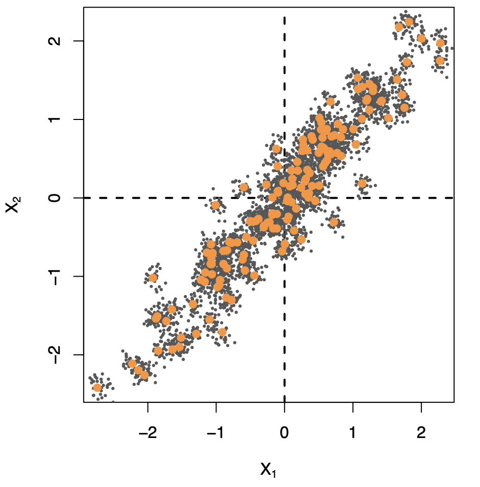Make many copies of each \((x_i, y_i)\) and add a small amount of Gaussian noise to the \(x_i\) — a little cloud around each observation — but leave the copies of \(y_i\) alone!
This makes the fit robust to small perturbations in \(x_i\), and is equivalent to ridge regularization in an OLS setting.
Data Augmentation on the Fly
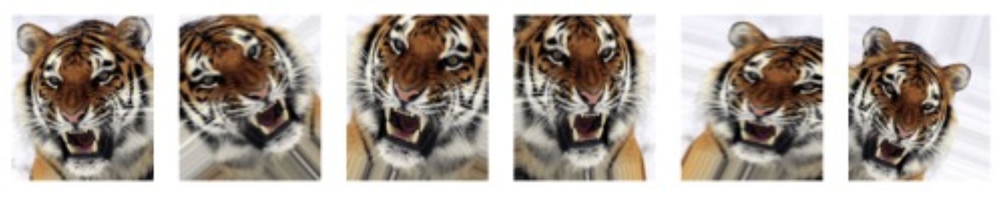Data augmentation is especially effective with SGD, here demonstrated for a CNN and image classification.
Natural transformations are made of each training image when it is sampled by SGD, thus ultimately making a cloud of images around each original training image.
The label is left unchanged — in each case still tiger.
Improves performance of CNN and is similar to ridge.
Double Descent
With neural networks, it seems better to have too many hidden units than too few.
Likewise more hidden layers better than few.
Running stochastic gradient descent till zero training error often gives good out-of-sample error.
Increasing the number of units or layers and again training till zero error sometimes gives even better out-of-sample error.
What happened to overfitting and the usual bias-variance trade-off?
Belkin, Hsu, Ma, and Mandal (arXiv 2018) Reconciling Modern Machine Learning and the Bias-Variance Trade-off.
The Double-Descent Error Curve

When \(d \leq 20\), model is OLS, and we see usual bias-variance trade-off.
When \(d > 20\), we revert to minimum-norm. As \(d\) increases above 20, \(\sum_{j=1}^d \hat{\beta}_j^2\) decreases since it is easier to achieve zero error, and hence less wiggly solutions.
Less Wiggly Solutions
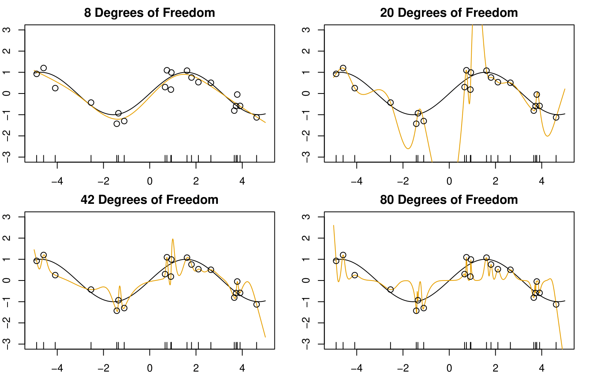To achieve a zero-residual solution with \(d = 20\) is a real stretch!
Easier for larger \(d\).
Some Facts
In a wide linear model (\(p \gg n\)) fit by least squares, SGD with a small step size leads to a minimum norm zero-residual solution.
Stochastic gradient flow — i.e. the entire path of SGD solutions — is somewhat similar to ridge path.
By analogy, deep and wide neural networks fit by SGD down to zero training error often give good solutions that generalize well.
In particular cases with high signal-to-noise ratio — e.g. image recognition — are less prone to overfitting; the zero-error solution is mostly signal!
Software
Wonderful software available for neural networks and deep learning. Tensorflow from Google and PyTorch from Facebook. Both are Python packages.
In the Chapter 10 lab we demonstrate tensorflow and keras packages in R, which interface to Python. See textbook and online resources for Rmarkdown and Jupyter notebooks for these and all labs for the second edition of ISLR book.
The torch package in R is available as well, and implements the PyTorch dialect. The Chapter 10 lab will be available in this dialect as well; watch the resources page at www.statlearning.com.
Summary
- XXXX
- XXXX
Thank you!
Predictive Analytics